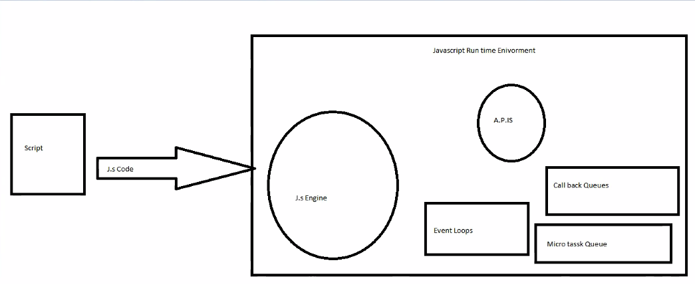

JS is a dynamic programming language and it is most popular language in the world wide
Js is used before for only interactive web pages.
JS is used everywhere now web apps and mobile apps ,HTML , CSS are static
JS is used in NETFLIX, WALMART, PAYPAL,....
compilation to execution.... , in javascript we called as interpreter
parsere--> code executed line by line
Interpreter --> Executed line by line
Interpreter is fast compared to compiler,changes from source code to byte code and then result


var a=2;
function sq(num) {
var ans=num*num;
return ans;
}
var sq2 = sq(a);
console.log(sq2); //4
var sq3 = sq(4);
console.log(sq3); //16

After completion of FEC , its get deleted and after that GEC is also get deleted.